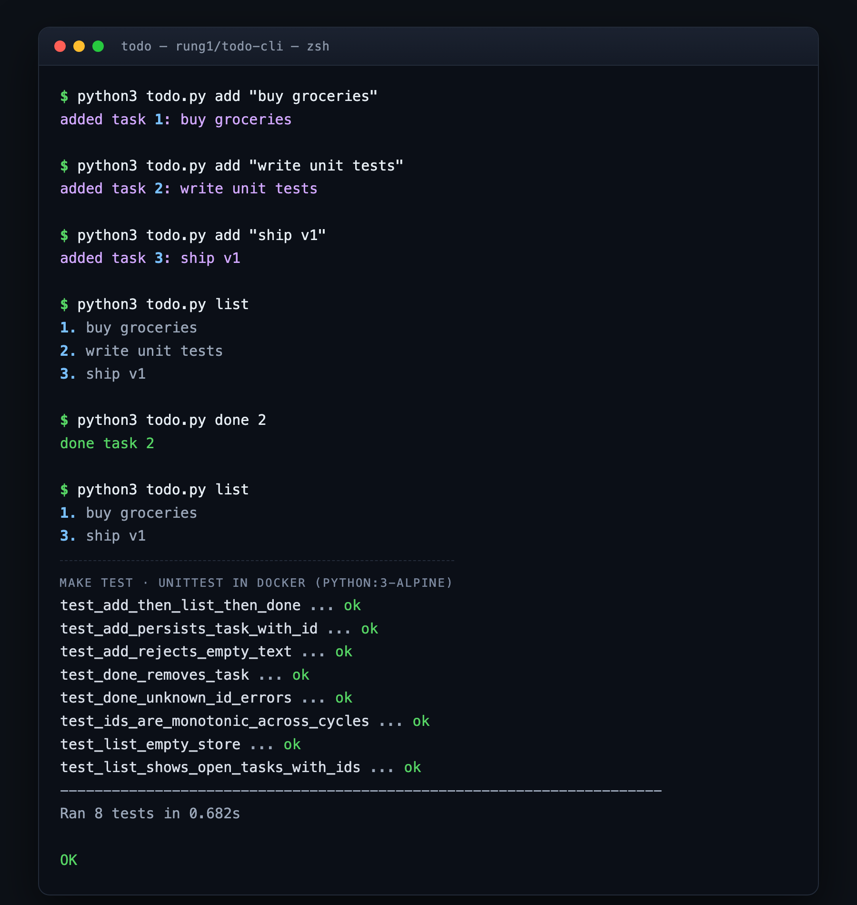

single-file Python-stdlib todo CLI · capability-ladder benchmark v2, rung R1 · Hermes Delivery Studio
add "x" persists the task & list shows it with a numeric id (verified: "added task 1: buy groceries" → list shows "1. buy groceries").done <id> removes the task & list no longer shows it (verified: done 2 → list drops "write unit tests", keeps 1 & 3).make test all green — 8/8 unittests pass in python:3-alpine from a clean checkout.
TODO_STORE_PATH → temp file), then the make test summary. Exact commands:
python3 todo.py add "buy groceries"
add "write unit tests"
add "ship v1"
list
done 2
list
#!/usr/bin/env python3
"""todo — minimal CLI todo app (Python stdlib only).
Subcommands
add <text> Append a task to the JSON store.
list Display tasks with numeric IDs.
done <id> Mark a task complete (removed from the store).
The store lives at STORE_PATH (env var) or ./tasks.json relative to the working
directory. The store is a JSON list of objects: {"id": int, "text": str, "done": bool}.
"""
from __future__ import annotations
import argparse
import json
import os
import sys
from pathlib import Path
STORE_PATH_ENV = "TODO_STORE_PATH"
DEFAULT_STORE_NAME = "tasks.json"
def store_path() -> Path:
"""Resolve the JSON store path: $TODO_STORE_PATH or ./tasks.json."""
p = os.environ.get(STORE_PATH_ENV)
return Path(p) if p else Path.cwd() / DEFAULT_STORE_NAME
def load_tasks(path: Path) -> list[dict]:
"""Load the task list from `path`; return [] if the file is absent or empty."""
if not path.exists():
return []
try:
data = json.loads(path.read_text(encoding="utf-8") or "[]")
except json.JSONDecodeError as exc:
raise SystemExit(f"error: store at {path} is corrupt: {exc}") from exc
if not isinstance(data, list):
raise SystemExit(f"error: store at {path} is not a list")
return data
def save_tasks(path: Path, tasks: list[dict]) -> None:
"""Persist the task list to `path` atomically (write-temp + replace)."""
path.parent.mkdir(parents=True, exist_ok=True)
tmp = path.with_suffix(path.suffix + ".tmp")
tmp.write_text(json.dumps(tasks, indent=2) + "\n", encoding="utf-8")
os.replace(tmp, path)
def next_id(tasks: list[dict]) -> int:
"""Return the next monotonically increasing task id (max+1, 1 if empty)."""
return (max((t["id"] for t in tasks), default=0)) + 1
def cmd_add(args: argparse.Namespace) -> int:
"""Append a new task with `args.text` and persist."""
text = (args.text or "").strip()
if not text:
print("error: add requires non-empty text", file=sys.stderr)
return 2
path = store_path()
tasks = load_tasks(path)
tasks.append({"id": next_id(tasks), "text": text, "done": False})
save_tasks(path, tasks)
print(f"added task {tasks[-1]['id']}: {text}")
return 0
def cmd_list(_: argparse.Namespace) -> int:
"""Print all open (not-yet-done) tasks as 'id. text' lines."""
path = store_path()
tasks = load_tasks(path)
open_tasks = [t for t in tasks if not t.get("done")]
if not open_tasks:
print("(no tasks)")
return 0
for t in open_tasks:
print(f"{t['id']}. {t['text']}")
return 0
def cmd_done(args: argparse.Namespace) -> int:
"""Mark the task with id `args.task_id` as done (removes it from the list)."""
path = store_path()
tasks = load_tasks(path)
target = args.task_id
kept = [t for t in tasks if t["id"] != target]
if len(kept) == len(tasks):
print(f"error: no task with id {target}", file=sys.stderr)
return 1
save_tasks(path, kept)
print(f"done task {target}")
return 0
def build_parser() -> argparse.ArgumentParser:
p = argparse.ArgumentParser(prog="todo", description="Minimal CLI todo app.")
sub = p.add_subparsers(dest="cmd", required=True)
p_add = sub.add_parser("add", help="Add a new task.")
p_add.add_argument("text", help="Task text (quoted).")
p_add.set_defaults(func=cmd_add)
p_list = sub.add_parser("list", help="List open tasks.")
p_list.set_defaults(func=cmd_list)
p_done = sub.add_parser("done", help="Mark a task done (removes it).")
p_done.add_argument("task_id", type=int, help="Numeric task id from `list`.")
p_done.set_defaults(func=cmd_done)
return p
def main(argv: list[str] | None = None) -> int:
parser = build_parser()
args = parser.parse_args(argv)
return int(args.func(args) or 0)
if __name__ == "__main__":
raise SystemExit(main())
The delivered source is 118 lines — a single file, zero third-party imports (argparse / json / os / sys / pathlib only). Atomic writes via write-temp + os.replace.
Captured verbatim from make test — python3 -m unittest discover -s tests -v inside python:3-alpine, run against a clean throwaway checkout of origin/r1/todo-cli:
test_add_then_list_then_done (test_todo.TodoCliSubprocessTests.test_add_then_list_then_done) ... ok test_add_persists_task_with_id (test_todo.TodoLibTests.test_add_persists_task_with_id) ... ok test_add_rejects_empty_text (test_todo.TodoLibTests.test_add_rejects_empty_text) ... ok test_done_removes_task (test_todo.TodoLibTests.test_done_removes_task) ... ok test_done_unknown_id_errors (test_todo.TodoLibTests.test_done_unknown_id_errors) ... ok test_ids_are_monotonic_across_cycles (test_todo.TodoLibTests.test_ids_are_monotonic_across_cycles) ... ok test_list_empty_store (test_todo.TodoLibTests.test_list_empty_store) ... ok test_list_shows_open_tasks_with_ids (test_todo.TodoLibTests.test_list_shows_open_tasks_with_ids) ... ok ---------------------------------------------------------------------- Ran 8 tests in 0.682s OK
| Pull request |
https://github.com/coffeebreakerboy-sys/todo/pull/92 State OPEN CI ✓ AI review (free) — SUCCESS |
|---|---|
| Reproduce green | gh repo clone coffeebreakerboy-sys/todo && cd todo && git checkout r1/todo-cli && make test |
| Use the CLI | cd rung1/todo-cli && python3 todo.py add "ship v1" && python3 todo.py list && python3 todo.py done 1 |
| This page | Served live over HTTP (responds 200 OK) as proof it is a real, self-contained artifact — open it, read the code, click through to the PR. |